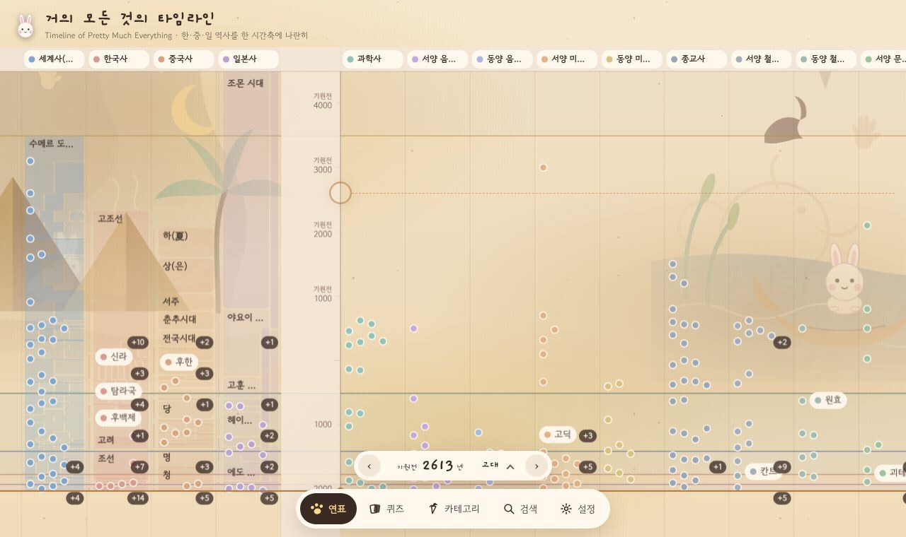

아기토끼 · 커피 · 우주 · 원목
아기토끼 이시로와 함께하는
작은 공방입니다.
원목 찻집 창가에서 우주를 보는 반려 토끼 시로와 함께, 역사 연표·우주 퍼즐 게임·커피 도구처럼 직접 쓰고 싶은 것을 만들어 무료로 내놓습니다.
타임라인 바로 열기만드는 것 모두 보기
Lab · 실험실
토끼·커피·우주 규칙 밖에서 직접 쓰려고 만든 작은 도구들이에요. 시로의 메뉴에 오르기 전 단계입니다.
News · 소식
스페이스서퍼 달토끼 무료 웹판을 itch.io에 열었어요
당근 로켓을 탄 달토끼의 한 손가락 중력 퍼즐을 폰·PC 브라우저에서 설치 없이 할 수 있어요. 7장 56단계와 인피니티, 메시에 도감까지 모두 들어 있고 광고는 없습니다.
커피 레시피·메모함 공개, 스페이스서퍼 미리 해보기
시로의 커피 레시피와 실험실의 메모함을 바로 쓸 수 있게 열고, 만드는 중인 스페이스서퍼 개발자 버전도 링크했어요.
허브 사이트 문을 열었어요
시로가 만드는 앱·게임·영상을 한곳에서 볼 수 있는 입구를 열었습니다. 작품별 소개, 개인정보처리방침, 문의 창구를 여기 모아 둡니다.
Story · 시로 이야기
시로는 진짜 반려 토끼예요. 커피 향 나는 원목 방에서 창밖을 보던 시로를 주인공 삼아, 토끼·커피·우주가 겹치는 것만 만들기로 했습니다.
Contact · 문의
버그 신고, 제안, 협업 모두 메일 한 통이면 됩니다.